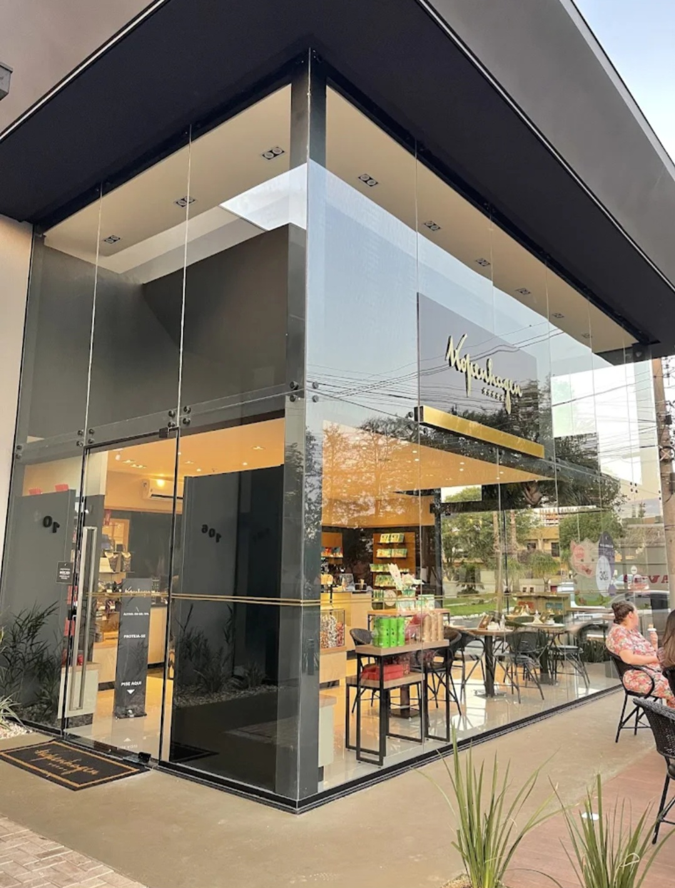
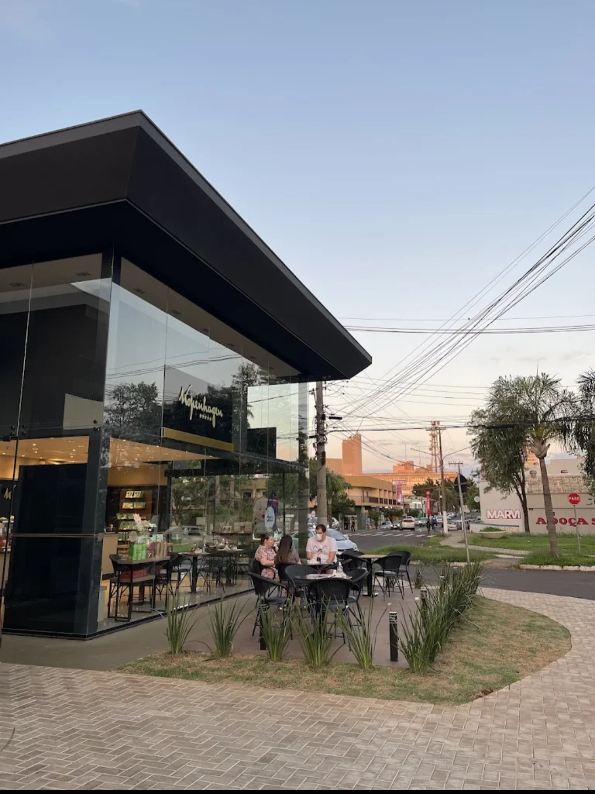
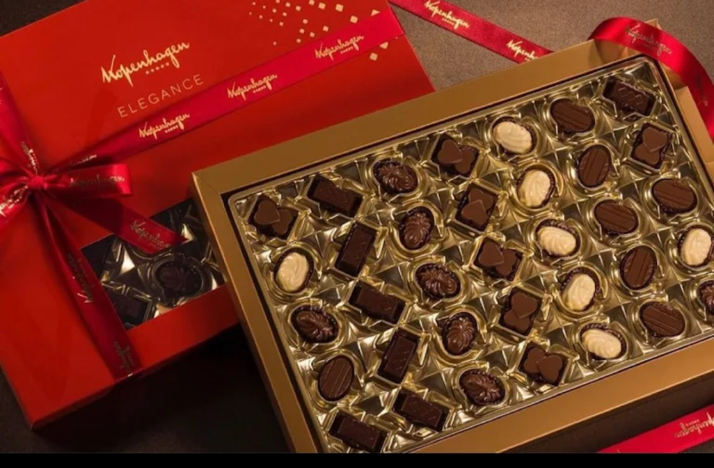
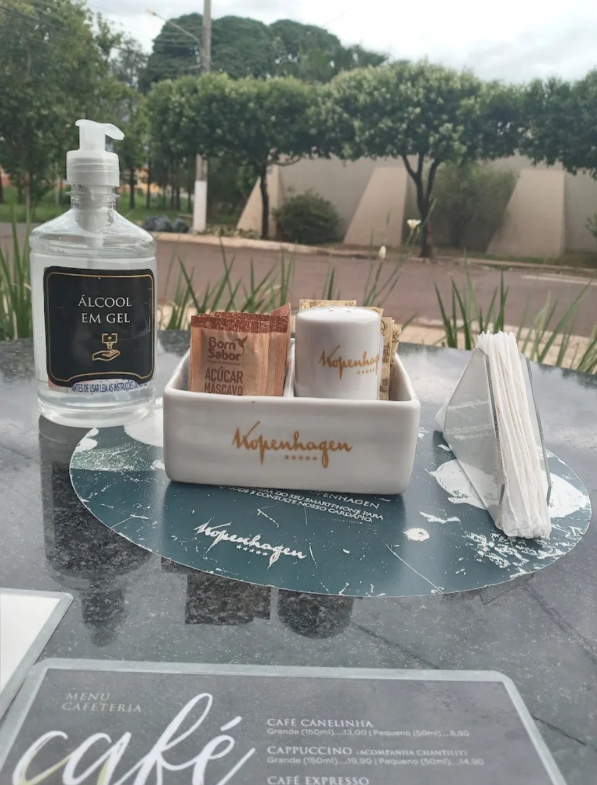
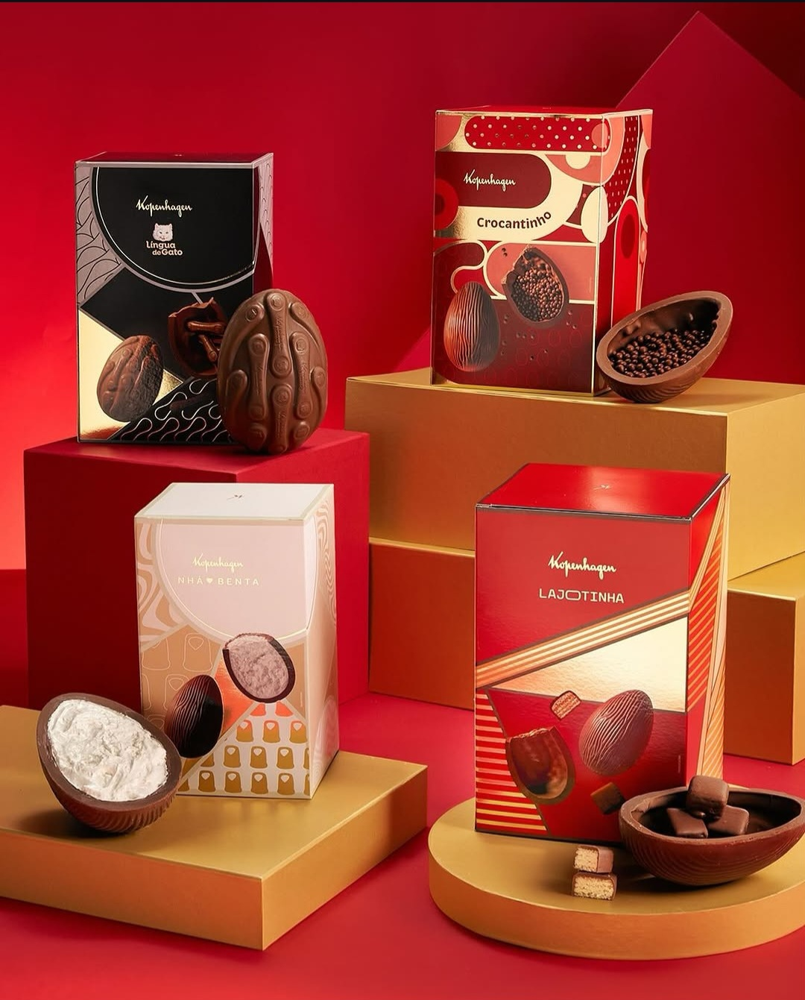

Chocolateria e cafeteira • Ourinhos - SP
A Kopenhagen Ourinhos traz toda a tradição e sofisticação de uma das marcas mais renomadas do Brasil desde 1928, oferecendo chocolates finos de altíssimo padrão.
Com ambiente elegante e acolhedor, a loja proporciona uma experiência única, reunindo trufas, bombons, presentes sofisticados e cafés selecionados.
Além dos clássicos chocolates, o espaço conta com balcão de cafés e sorvetes, ideal para momentos especiais e encontros com muito sabor e requinte.
Endereço: Rua Bahia, nº 104
Bairro: Jardim Paulista
Cidade: Ourinhos - SP
WhatsApp: (14) 99672-8579
Horário:
Segunda a sábado: 09h às 19h
Domingo: 13h às 19h
✔ Chocolates finos e sofisticados ✔ Trufas e bombons premium ✔ Presentes elegantes ✔ Cafés selecionados ✔ Sorvetes especiais ✔ Tradição desde 1928 ✔ Ambiente de alto padrão



